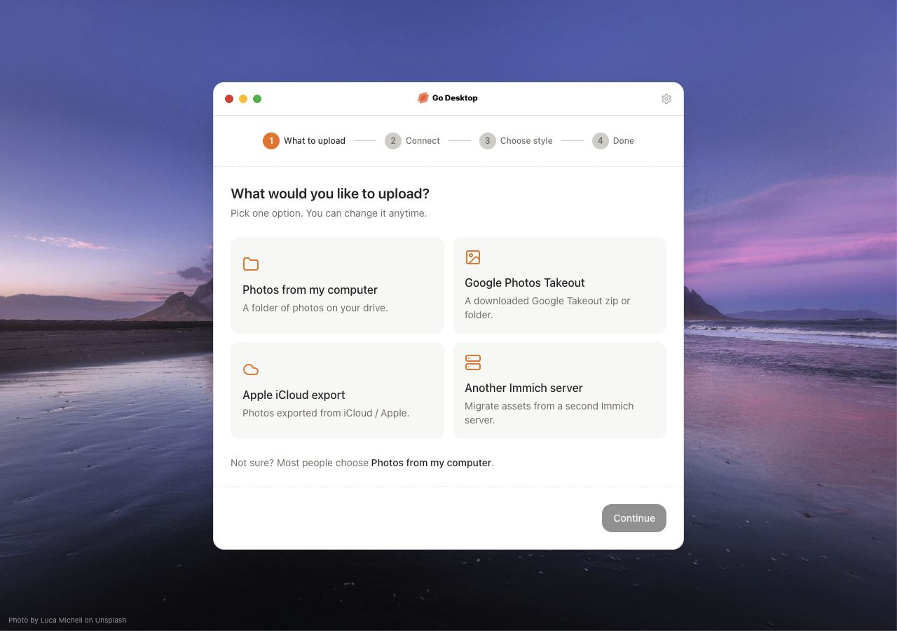
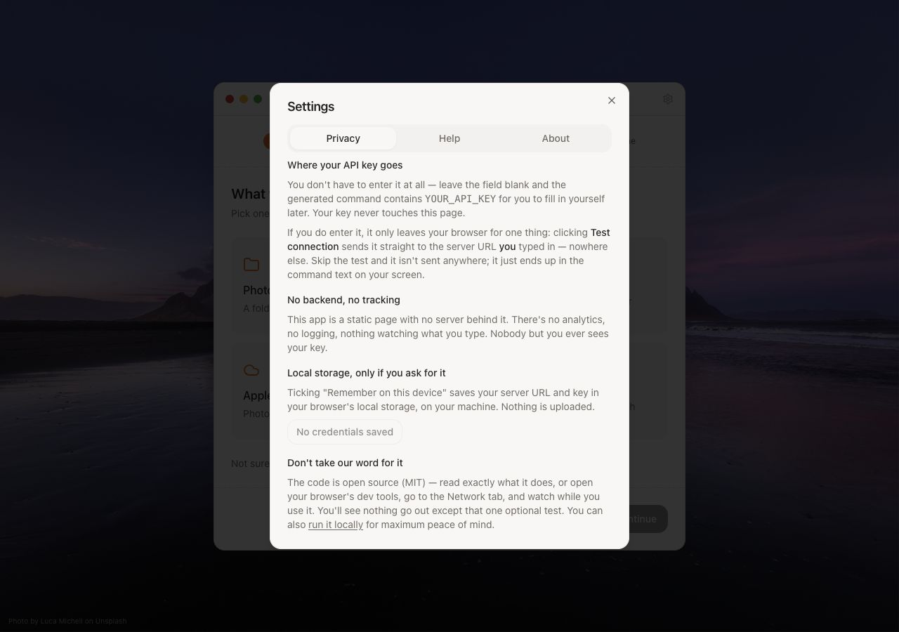
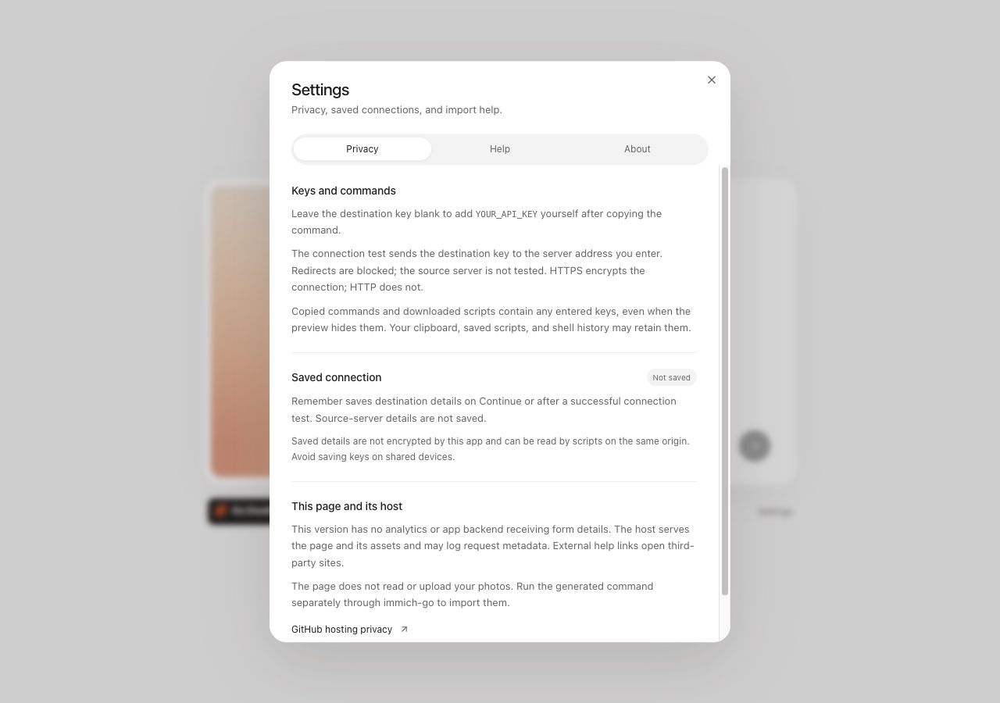

Published app → Latest design
The published baseline, captured October 9, and the newest local revision, captured October 15, 2026. Both at 1280 × 900. Click an image to view it in full.

The published app
Landscape artwork, window chrome, a full stepper, and four source tiles.

A quieter visual direction
A plain light backdrop, soft card artwork, and a compact Go Desktop logo. One selector, one action, fluid transitions, and reduced-motion support.
Settings

The published Settings
The original privacy information and controls.

Clearer and easier to scan
Reviewed privacy wording, explicit key-storage and export details, saved-connection controls, expandable help, and scrolling within the dialog.